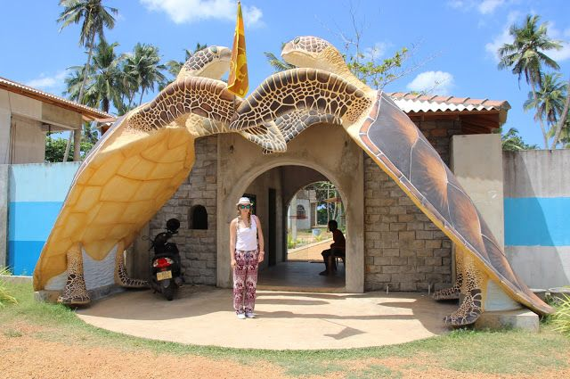
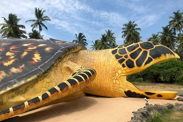

Kosgoda Turtle Hatchery
About Kosgoda Turtle Hatchery
The Kosgoda Turtle Hatchery is a sanctuary for sea turtles located on the beautiful coastline of Sri Lanka. It aims to protect and conserve sea turtles through various conservation programs and initiatives.
Turtle Conservation
The Kosgoda Turtle Hatchery in Sri Lanka is a renowned conservation center focused on protecting endangered sea turtles. It incubates and releases turtle eggs, educates visitors about turtle species and conservation, and conducts research and community outreach programs. The hatchery plays a crucial role in ensuring the survival of these magnificent creatures and their marine ecosystems.
Visiting Kosgoda
Visitors to Kosgoda Turtle Hatchery can learn about the different turtle species, their life cycle, and the threats they face in the wild. They can also witness the amazing sight of baby turtles being released into the sea, a truly memorable experience for all.